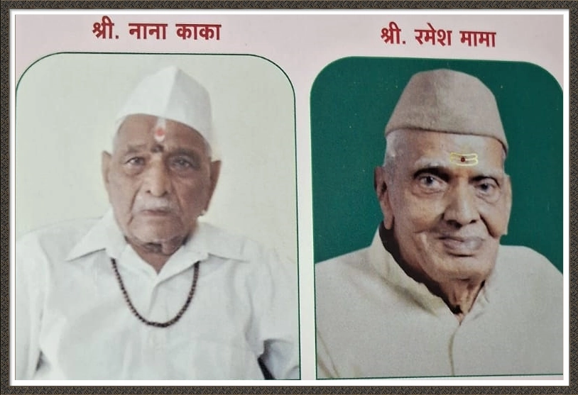

प्रस्तावना
।। श्रीमद् संचारेश्वरगीता ।।
प. पू. सद्गुरु श्री संत पाचलेगांवकर महाराज यांचे सर्वात धाकटे सख्खे बंधू आमचे काका 'श्री. नागेश राजारामपंत कुळकर्णी पाचलेगांवकर' उपाख्य नाना काका (वय वर्ष ९१) यांनी प. पू. श्री महाराजांच्या उपदेशबोधानुसार सैन्यात भरती होवून देशसेवा केली व सेवा निवृत्तीनंतर खान्देशात पू. श्रींच्या कार्याचा प्रचार व प्रसार केला.
श्री. नाना काका , श्री. रमेश मामा तसेच आमचे सख्खे ज्येष्ठ मामा श्री. रमेशराव सदाशिवराव पिंगळे उपाख्य श्री. रमेश मामा (वय वर्षे ८५) यांनी पू. श्रींच्या उपदेशानुसार खामगांव आश्रमातील भगवत् पूजाव्रत कित्येक वर्षे निष्ठेने सांभाळले. या वयातही पौरोहित्याद्वारे ते जनसेवा करीत असतात.
वंदनीय श्री. नानाकाकांना व श्री. रमेशमामांना हा ग्रंथ अर्पण करतांना मला अतिशय आनंद होत आहे.
- दास मोहन श्या. कुळकर्णी
पाचलेगांवकर
।। पू. महाराजांना वंदना ।।
श्री गुरु संचारेश्वर स्वामी नरसिंह चरणी नमनाला ।
करितो सद्भावे मी स्वधर्म रक्षक प्रताप सूर्याला
।।१।।
मुक्तेश्वरासी धरिले हृदयी ज्याने अनन्यभावाने ।
कृष्णा राजारामा तनया वंदू अखंड प्रेमाने
।।२।।
जीवित ध्येय जयाचे स्वधर्म रक्षण तसेच संघटन ।
सकला हिंदु जनांची शुद्धी पतितांची धर्मी निज जाण
।।३।।
अनंत कोटी ब्रह्मांड नायक
राजाधिराज योगिराज राष्ट्रसंत धर्मभास्कर
सद्गुरु श्री संत नरसिंह संचारेश्वर
पाचलेगांवकर महाराज की जय
।।४।।
श्री सखाराम महाराज संस्थान
मो. नं. ८८२६८११९९१
दिनांक ०८/०७/२०२०
।।श्री सखारामः शरणम् ।।
राष्ट्रसंत श्री संचारेश्वर पाचलेगावकर महाराजांच्या तत्वज्ञानाचे सार असलेल्या भारतीय समारिधर्म गंधावर आधारित "श्री संचारेश्वर गीता' या ग्रंथाचे अवलोकन केले आणि लोणी संस्थान न दत्तवाडीच्या धर्मपीठाचे संबंधीत अनेक स्मृती हृद्यात जाग्या झाला. संत श्री सखाराम महाराज हे नारायण दत्तानंद स्वामीचे भेटीला वाडीला गेले होते तसेच माधवाश्रम स्वामी व संचारेश्वर महाराज हे शुरू-शिष्य लोणीला येत असत. असा हा मूत्र सत्पुरुषांपासून चालत आलेला ऋणानुबंध म्हणजे "साधवाः साधु भूषणाः " याच सुत्राचा समन्वय आहे. संतांचे कार्यच "वाढवया सुख भक्तिभाव धर्म" हे आहे व संत शरिराने वेगळे दिसत असले तरीही आत्मतत्वाने एकरुपच असतात. या शुभ प्रसंगी सर्व संतांचे चरणी नतमस्तक होऊन श्री मोहन कुळकर्णी, खामगाव यांच्या ज्ञानकार्यास सद्गुरु श्री सखाराम महाराजांचा आशीर्वाद व आमच्या शुभेच्छा,तुका म्हणे संत सेवा । हेचि देग ऊत्तमः
- भवदीय वंशस्थ
श्री गोविंदात्मज रामकृष्ण उपाख्य
नानामहाराज, श्री सरखाराम महाराज
संस्थान लोणी. नाना महाराज
(हे कळविण्यास अत्यंत खेद होतो की ज्यांनी ह्या शुभेच्छा पाठविल्या त्या श्री. गोविंदात्मज रामकृष्ण उपाख्य श्री. नाना महाराज यांना दि. २९-०९-२०२० रोजी देवाज्ञा झाली. ईश्वरेच्छा अजुन काय ? त्यांना आपल्या सर्वांच्या वतीने भावपूर्ण श्रध्दांजली.)
।। श्री ।।
श्री मुक्तेश्वर नारायणदत्तानंद ट्रस्ट, दत्तवाडी पुरस्कार
प.पू. राष्ट्रसंत धर्मभास्कर श्री संत पाचलेगांवकर महाराज यांचे वंशज (पुतणे) श्री. मोहनराव श्यामराव कुळकर्णी, पाचलेगांवकर विरचित 'श्रीमद् संचारेश्वरगीता' या ग्रंथास वंदन करून ग्रंथकर्त्यास आम्ही शुभेच्छा देत आहोत. या अगोदर त्यांनी 'श्री संचारेश्वर चरित्रामृत' या पोथी मध्ये पू. श्री महाराजांचे चरित्र ओवीबद्ध केले होते. आता श्रीमद् संचारेश्वर गीतेमध्ये ९३६ ओव्यात व १८ अध्यायात श्री संचारेश्वर महाराजांचे तत्त्वज्ञान, गुरु शिष्यांच्या संवादातून ओवीबद्ध केले असून महाराजांच्या तत्त्वज्ञानाचा चरित्राचा प्रचार व प्रसार करण्याचे आपले जीवनव्रत त्यांनी अखंडपणे चालविले आहे असे दिसून येते. श्री. मोहनरावांनी लिहिलेली 'संचारेश्वर बावणी' जशी घरोघर म्हटल्या जाते व 'संचारेश्वर चरित्रामृत' पोथीचे अनेक ठिकाणी पारायण केल्या जाते, त्याचप्रमाणे 'श्रीमद् संचारेश्वरगीता ग्रंथ' सुद्धा पू. सद्गुरु संचारेश्वर महाराजांच्या भक्तांकडून अभ्यासिला जाईल असा आमचा विश्वास आहे. दत्तवाडीच्या प.पू. श्री नारायण दत्तानंद स्वामी, प.पू. सद्गुरु श्री माधवाश्रम स्वामी व श्री मुक्तकिर्तेश्वराचे आणि पाचलेगांवच्या श्री मुक्तेश्वर माऊलीचे आणि आपल्या सर्वांच्या हृदयी विराजमान असलेल्या सद्गुरु संचारेश्वर माऊलीचे ग्रंथकत्यास शुभाशीर्वाद आहेतच. त्याचप्रमाणे आपल्या अखंड सुरू असलेल्या ह्या सद्गुरु सेवा कार्याला आमच्याही हार्दिक शुभेच्छा !
रावसाहेब शिंदे, महत्पुरी - अध्यक्ष
मुंजाजी शेंद्रे, पाचलेगांव - कार्यवाह
धनंजय देशमुख, सोनपेठ - सहकार्यवाह
श्री मुक्तेश्वर नारायणदत्तानंद ट्रस्ट, दत्तवाडी.
'श्रीमद् संचारेश्वरगीता' हा ग्रंथ संत साहित्यामध्ये आदराचे स्थान प्राप्त करेल.
।। ॐ नमो नारायणाय ।। परम आदरणीय श्री. मोहनजी विरचित "श्रीमद् संचारेश्वर गीता" ग्रंथाचे अवलोकन करण्याचे महद्भाग्य प्राप्त झाले. श्री. मोहनजी यांना पूज्य श्री संत पाचेलगांवकर महाराजांचा आध्यात्मिक वारसा प्राप्त आहे. श्री महाराजांच्या कृपाछत्राखाली ते लहानाचे मोठे झाले. श्री महाराजांच्या सान्निध्यात त्यांची जडण घडण झाली. अनेक शास्त्रे, पुराणे, वेदउपनिषदादी ग्रंथ, भारतीय संत साहित्य, ग्रंथराज ज्ञानेश्वरी, समर्थांचा दासबोध, तुकोबांची अभंगगाथा इत्यादि ग्रंथांचे मनन चिंतन त्यांनी केले. त्या सर्व ग्रंथांचा प्रदीर्घ अभ्यास "श्रीमद संचारेश्वर गीता" अवलोकन करतांना येतो. ओवी मधुर, सारगर्मित, सहज अंतःकरणात ठसणारी प्रभावशाली झाली आहे. अवलोकन करतांना वाटतं कि श्री महाराज आपल्याला प्रत्यक्ष सांगत आहेत. श्री महाराजांची तेजः पूंज मूर्ति डोळ्या समोर प्रत्यक्ष प्रगट होते. सर्वच अध्याय धाराप्रवाही असून विचारांची मांडणी मर्माला स्पर्श करणारी आहे.
भगवत्कार्य अखंड, अबाधित संपन्न करण्यासाठी संत माहात्म्ये अवतरीत होत असतात. "आलो याची कारणासी" अशी धारणा त्यांची स्पष्ट व घृढ असते. शास्त्र त्यांचे वाणीतून मुखर होत असतात. धर्म संस्कृति चे रक्षण आणि समाजाला प्रगतिची दिशा देण्याचे महत् कार्य त्यांचे हातून सम्पन्न होत असते. श्रीमद् संचारेश्वर महाराजांचे कार्य अद्भुत आहे. श्रीमद् संचारेश्वर गीते मध्ये श्री महाराजांनी उपासने पासून तो जय जगत पर्यंत केलेला उपदेश खूप श्रेष्ठ आहे.
म्हणोनि नित्य नियमची करावा। उपासनेचा मार्ग धरावा ।
तरीच कळेल आपुलिया जीवा । शिवोऽहम ।।
साधक पूर्णपणे सावधान नसला तर त्याची साधना पूर्ण होणार नाही. मठ मंदीरे कशासाठी ? दैनंदिन जीवनात मनुष्याचे आचरण कसे असावे ? धर्म कार्यात राष्ट्रकार्यात कसे समर्पित असावे ? या संदर्भात खूप श्रेष्ठ मार्ग श्री महाराज आपल्याला दाखवितात, सांगावे तेवढे थोडेच!
परम आदरणीय श्री. मोहनजींची अध्यात्मिक बैठक फार मोठी आहे. भारतीय धर्म संस्कृति बद्दल त्यांची निष्ठा फार श्रेष्ठ आहे, याची अनुभूती ग्रंथ वाचतांना येते. त्यामुळे "श्रीमद् संचारेश्वर गीता" संत साहित्यामध्ये वाचतांना येते. त्यामुळे 'श्रीमद संचारेश्वरगीता' संत साहित्यामध्ये आदराचे स्थान प्राप्त करेल या बद्दल मला पूर्ण विश्वास आहे.
काही वर्षापूर्वी श्री. मोहनजींच्या दत्तपाठ ह्या ग्रंथाचे प्रकाशन करण्याचा योग मला आला होता. आता ह्या त्यांच्या "श्रीमद् संचारेश्वर गीता" ह्या ग्रंथाला शुभेच्छा देण्याचा सुयोग येत आहे. या मधल्या कालावधीत त्यांनी अनेक ग्रंथ लिहिले आहेत. ते आमच्या वाचनातही आले आहेत. तसेच त्यांची प्रवचनेही ऐकण्याचा अनेकदा योग आला आहे. त्यावरून आमचे आदरणीय समर्थभक्त कै. श्री. सुनिलजी चिंचोळकर यांनी श्री. मोहनजींना 'धर्मभास्कर किरण' ही दिलेली उपाधी किती सार्थ आहे हे कळून येते.
श्रीमद् संचारेश्वर महाराजांचे चरणी दंडवत प्रणाम आणि प्रार्थना, श्री. मोहनजींकडून भविष्यात समाजाला धर्म मार्ग दाखविणाऱ्या रचना घडत राहो, सहस्त्रवार वंदन अभिवादन !
।। जय जय रघुवीर समर्थ ।।
- श्री. शंकर महाराज
मु. जागृती आश्रम, शेलोडी
ता. खामगांव, जि. बुलढाणा (महाराष्ट्र)
(प.पू. श्री. शंकर महाराज अद्भुत व्यक्तिमत्व आहे. त्यांनी खामगांवी नितांत निसर्गसुंदर व पवित्रतम जागृती आश्रमाची स्थापना केली आहे. श्री जगन्नाथपुरी, श्री द्वारका, श्री रामेश्वरम्, श्री बद्रीनाथ या चारही धामाच्या ४/५ शिष्यांसह पायी यात्रा केल्या. या सर्व धामांवर भागवत प्रवचने झाली असून नेपाळ, जर्मनी व लंका येथे भागवत व रामायणावर प्रवचने झाली आहेत. दरवर्षी पंढरपुरची आषाढीची यात्रा पायीच करीत असतात.)
श्रीमद् संचारेश्वर गीता - एक दिपस्तंभ !
राष्ट्रसंत, धर्मभास्कर प.पू. नृसिंह संचारेश्वर महाराज अर्थात, संत पाचलेगांवकर महाराज यांच्या नित्य आणि निकट सहवासाच्या परमसौभाग्यशाली अमृत सरोवरात आपले जीवन पुष्प विकसित करणारे, त्यांच्याच वंशलतेचे, भावसुगंधी व्यक्तीमत्त्व आदरणीय श्री. मोहनरावजी श्यामराव कुलकर्णी पाचलेगांवकर, यांनी आपले सद्गुरु तथा पूज्य पिताश्रींचे ज्येष्ठ बंधुवर्य "संचारेश्वर" प्रभूचे तत्त्वज्ञान "श्रीमद् संचारेश्वर गीता" या ओवीबध्द वाक्यज्ञाद्वारे सद्गुरु भक्तांसाठी समर्पित केले आहे. त्यांचे हे सत्कर्म, त्या सर्वात्मक ईश्वराला परिपुष्ट करणारे आहे अशी माझी श्रध्दा आहे.
ही काव्य निर्मिती म्हणजे त्यांच्यावर असलेल्या सद्गुरु कृपेचे दिव्य दर्शन आहे. "ओवी" या काव्य रचनेमध्ये श्री. मोहनरावर्जीनी ज्या लाघवी प्रासादिकतेचे जे लडिवाळ दर्शन घडविले आहे तो त्यांच्यावर असलेल्या गुरुप्रसादाचा जणू काही भव्य प्रासादच आहे.
सद्गुरु आणि सत्शिष्य यांच्या संवादातून प्रवाहित होणारी ही काव्यगंगा, गंगामातेच्या सहज वेगाने आणि तितक्याच सहज सुंदर आवेगाने महाराजांच्या तत्त्वज्ञानाला असे कवटाळते की माता आपल्या लाडक्या अपत्याला जणू काही अपार मायेने कुरवाळीतच आहे असा आनंद वाचकांना मिळतो.
संवादातील सहजता, नाट्यमयता, अनौपचारिकता या श्रीमद् संचारेश्वरगीतेला असे अलंकार जडविते की या सौंदर्याने मूळ 'तत्त्व पुरूष' सुध्दा मोहरून जावा !
'उपासना योगा' ने या गीतेचा प्रारंभ होतो व 'राष्ट्रहित सर्वोपरी योगा' ने तिचा कळस दर्शविल्या जातो. हा उपासनेपासून राष्ट्रहित सर्वोपरी पर्यंतचा प्रवास अतिशय शिस्तबद्धपणे आणि तेवढ्याच प्रज्ञाप्रातिभसामर्थ्याने श्री. मोहनरावजींनी बांधला आहे. त्यात उपासना उपक्रमाचा दुसरा अध्याय वाचताना प.पू. महाराजांसोबत उपासनेत सहभागी झालेल्या भाग्यवंतांच्या मनःचक्षु समोर तर उपासनेचे दृष्य अगदी ठसठसितपणे दिसल्याशिवाय राहणार नाही.
सगुण निर्गुणाची अतिशय सोपी व्याख्या करणारा अध्याय तिसरा असो की धर्माची खरी व्याख्या सांगणारा अध्याव पाचवा असो. प.पू. महाराजांच्या विवेचनातील सोपेपणा, खेळकरपणा आणि ठामपणा प्रगट करण्यास मोहनरावांची ओवी कमालीची यशस्वी ठरली आहे.
'सुख' दाखवणारा सहावा आणि देव व दैवाच्या श्रेष्ठत्वाचा निर्णय करणारा सातवा प.पू. महाराजांच्या अलौकीक आणि तेजःपुंज प्रखर बुध्दीमत्तेचे दर्शन घडविणारे जणू दिपस्तंभच !!
देवभक्ती व देशभक्तीचा समन्वय करून देणारा आठवा आणि गृहस्थाश्रमाचे श्रेष्ठत्व सांगणारा नववा यातून महाराजांचा सामाजिक जीवनाविषयीचा आगळावेगळा आणि श्रेष्ठ दृष्टीकोन साधकास निश्चितच दिशा आणि प्रेरणा देण्यास समर्थ आहे.
कार्यपध्दतीविषयी महाराजांचे चिंतन ठेवणारा दहावा आणि चमत्कारी बुवाबाजीवर आसूड ओढणारा अकरावा यातले विचार सौंदर्य, कविच्या प्रतिभेचे काव्य सौंदर्य आणि खऱ्या संतांच्या भाव सौंदर्याचे दर्शनच जणू वाचकांना घडते.
जातीभेद, अंधश्रध्दा, आणि निर्थक रूढीला टाळून शुध्द साधक कार्यकर्ता घडविणारा बारावा-तेरावा अध्याय ही महाराजांच्या दिव्यत्वाची प्रचितीच आपल्याला देतात.
पाचलेगांवकर महाराज म्हणजे श्रमदान, श्रम यज्ञ, श्रम तपस्या !! श्रमदेवाचा हा महान पुजारी आपल्याला चौदाव्या अध्यायात फार लोभसवाणेपणाने भेटतो.
मुस्लिमांविषयीचा महाराजांचा दृष्टीकोन, सर्वधर्म समभावाची महाराजांची दृष्टी आणि यातून जगापुढे महाराजांनी आणलेला समष्टीधर्म. विश्व बंधुत्व है सारे सारे अठरा अध्यावातून उभे करताना कविवर्य श्री. मोहनराव यांची काव्यप्रतिभा आपल्याला अक्षरशः खिळवून ठेवते.
असो. श्रीमद् भगवद्गीतेच्या अठरा अध्यायांचे पवित्र स्मरण घडविणारी ही अठरा अध्यायांची "श्रीमद् संचारेश्वर गीता" ही, संक्षिप्तता आणि व्यापकता या दोन्हीचाही अनुपम सुवर्णमध्य साधणारी काव्यनिर्मिती ठरली आहे असे मला वाटते.
कवीबालकाची लडिवाळ विनम्रता आणि महाराजांची दयापूर्ण कनवाळू वृत्ती याचा सुरेख संगम या गीतेतून पदोपदी जाणवतो.
तत्त्वज्ञानासारखे विषय काव्याच्या माध्यमातून सुलभपणे व्यक्त होण्यासाठी केवळ प्रतिभा पुरेशी नसते तर त्या प्रतिभेला सद्गुरुकृपेचा स्पर्शही असावा लागतो, अशा कृपास्पर्शाने पुनीत झालेली ही गीता. साधकांना निश्चितच प्रेरणादायी, पथदर्शक ठरेल असा विश्वास वाटतो. म्हणूनच मला म्हणावेसे वाटते की -
मोहन कुळकर्णी, व्यक्ती दिसतात वरकरणी ।
परि हृदयी अमृतझरणी, साधुवंशे झरतसे।।
प.पू. महाराजांच्या अंगाखांद्यावर खेळायचं, लोळायचं लाभलेलं भाग्य याशिवाय दुसरी कोणतीही योग्यता नसलेल्या माझ्या सारख्या वेड्या भाबड्याला ही शब्दसेवा करण्याचे भाग्य लाभले. त्या भाग्याचे भाग्यविधाते असलेल्या श्री संत पाचलेगांवकर महाराजांना अंतःकरणपूर्वक साष्टांग दंडवत प्रणाम करून लेखनाला विराम देतो.
- ह.भ.प.श्री. गंगाधर रंगनाथराव कुळकर्णी (न्हावेकर)
"श्री रंगाई प्रसाद"
यज्ञभूमी परिसर, गंगाखेड, जि. परभणी
मो. ९६२३६४०१५५
(ह.भ.प. श्री. गंगाधर रंगनाथराव कुळकर्णी हे सुप्रसिध्द वक्ते, प्रवचनकार, किर्तनकार आणि कवी असून सद्गुरु सेलूकर महाराज गंगाखेड यांचे संबंधात त्यांनी विपूल लेखन केलेले आहे.)
मोहनरावांकडून वाक्सेवा अशीच घडत राहो !!
भारतीय तत्त्वज्ञानाच्या अध्यात्मिक विश्वात अद्वितीय तेजाने प्रकाशमान असणारी परीपूर्ण ज्ञानसरिता म्हणजेच श्रीमद् भगवद्गीता । चाच गीता तत्त्वावर आधारीत भारतीय परंपरेचे व्यष्टी व सृष्टी समन्वयात्मक तत्त्वज्ञान आधुनिक भाषेत विज्ञानवादी जगताला समजावून सांगतांना प.पू.श्री संत नरसिंह संचारेश्वर पाचलेगांवकर महाराजांनी जी प्रवचने दिली, त्यातील काही प्रवचनांचे संकलन म्हणजेच 'भारतीय समष्टि धर्म हा ग्रंथ होय. चार खंडात असलेले हे तत्त्वज्ञान श्री. मोहनराव श्वामराव कुळकर्णी, पाचलेगांवकर यांनी प्रस्तुत 'श्रीमद् संचारेश्वर गीता' या ग्रंथात १८ अध्याय व ९३६ ओव्यांमध्ये गुंफण्याची जी किमया करून दाखविली ती खरोखरच अवर्णनीय आहे !
वस्तुतः पू. श्री. महाराजांच्या दिव्यवाणीद्वारे प्रवाहीत झालेली अध्यात्मिकतेची उदात्त धर्मतत्त्वे सांगणारी ही समष्टिधर्मसरिता विश्वव्यापी झाली असली तरी या ज्ञानगंगेचे उगमस्थान शोधावयाचे झाल्यास दत्तवाडी नैकोटा (ता. गंगाखेड, जि. परभणी) येथेच जावे लागेल. कारण परंपरेचे मूळ पुरूष 'श्री. नारावण दत्तानंद' हेच या धर्मतत्त्व प्रवाहाचे उगमस्थान आहेत. दत्तवाडीच्या मुक्तकिर्तेश्वर मंदिरात श्री. नारायण दत्तानंदांचे हस्ताक्षर आजही उपलब्ध आहे. तेथील शिलाखंडावर त्यांनी चुन्यात कोरलेली तुकोबा व समर्थांची वचने आजही पहायला मिळतात. म्हणजेच पू. श्रींच्या पूर्वावतारातच भारतीय समष्टिच्या तत्त्वज्ञानाचा पाया रचला गेला व पुढील अवतारात त्याचा विस्तार झाला. पू.श्री. नारायण दत्तानंद व पू.श्री. पाचलेगांवकर महाराज वा दोन अवतारांना जोडून आधीच्या स्मृती पुनश्च जागृत करण्याचे कार्य करणारी विभूती म्हणजेच प.पू. सद्गुरु श्री. माधवाश्रम स्वामी महाराज होत.
प्रवृत्तीमार्गातून परमात्मप्राप्ती सांगणारे पू. श्रींचे तत्त्वज्ञान असल्यामुळे श्रमप्रतिष्ठा वर्धिष्णू करणारी व एकसूत्री समाज निर्माण करणारी सुगणोपासना पू. श्रींनी सांगीतली व ते हेरून श्री. मोहनरावांनी श्रीमद् संचारेश्वर गीतेचा प्रारंभ उपासनेपासूनच केला आहे. पू. श्रींची राष्ट्रधर्म उपासना व त्यामागचा उद्देश ईश्वरीय तत्त्वात असलेले सगुण निर्गुण उपासकांचे शंका निरसन व राष्ट्राच्या सर्वांगिण विकासासाठी चैतन्यमय अमृतत्त्व विकसनाची विचारधारा या ग्रंथात अतिशय ओघवत्या शैलीत विषद झालेली आहे. दैववादाचे अंधश्रध्देतून निर्माण होणारे भूत श्रींनी आपल्या दिव्यवाणीतून बहिष्कृत केले व देवभक्ति व देशभक्तिची व्याख्या समष्टिधर्मात जी सांगीतली आहे तीचे विवेचन करतांना मोहनरावांनी कमाल केली आहे.
पू. श्रींच्या प्रस्तुत गांधातील गृहस्थाश्रमाचे वर्णन, दहाव्या अध्यावातील श्रींची आश्रम संकल्पना, विज्ञानवादी दृष्टिकोनातून पू. श्रींनी केलेले चमत्कारांचे विश्लेषण तर वाचनीयच झालेले आहे. हे समस्तही श्री वासुदेवो। ऐसा प्रतीती रसाचा ओतला भावो ।' ही माऊलींची आज्ञा आणि 'विष्णुमय जग वैष्णवांचा धर्म हे तुकोबारायांचे वचन हे पू. श्रींच्या जीवनकार्याचे प्रमाणभूत तत्त्व होते. त्यासाठी वैचारिक क्रांतीद्वारे समाज प्रबोधनातून विश्व बंधुत्वाची भावना जागविणारे कार्यकर्ते व प्रचारक निर्माण करण्यासाठी श्रींनी घेतलेल्या अविश्रांत मेहनतीचे वर्णन या ग्रंथात प्रत्ययकारी शब्दात वर्णिल्या गेले आहे.
वारकरी संप्रदायात ज्या प्रमाणे कठिण धर्मग्रंथाचे सरल सुलभ भाषेत विवेचन करणारी 'महनीय मंडळी आहेत. त्याचप्रमाणे आमच्या सद्गुरु संचारेश्वरांच्याही गहन तत्त्वज्ञानाचे कालपरत्वे सोप्या भाषेत विवेचन करणारे कोणीतरी हवे होते, ती उणीव पू. श्रींचे पुतणे असणाऱ्या व त्याच्या प्रदीर्घ सहवासाचे अनुग्रहीत असणाऱ्या श्री. मोहनरावांनी भरून काढली ह्यास्तव ते अभिनंदनास पात्र आहेत. कोरोना, लॉकडाऊन आदी संकटांना संधी समजून त्यांनी केलेले पू. श्रींच्या तत्त्वज्ञानाचे ओवीबध्द रसाळ विवेचन वाचून तर त्यांचेवर असलेल्या पू.श्री. महाराजांच्या आशीर्वादाचा प्रत्यय ठायी ठायी येतो. अजून एक सांगावेसे वाटते की ह्या लॉकडाऊनच्या काळात मोहनरावांच्या धर्मपत्नी सौ. तेजस्वीनी वहिनींनी केलेल्या सहकार्यामुळेच हा ग्रंथ मोहनराव लिहू शकले असा माझा विश्वास असल्याने त्या सुध्दा अभिनंदनास पात्र आहेत.
आता महत्वाचे सांगायचे म्हणजे आपल्या तत्त्वज्ञानाचे प्रसार कार्य मोहनरावांकडून करवून घेणारे पू. श्री. महाराजच आहेत अशी माझी श्रध्दा आहे. त्यामुळे मी पू. श्री. महाराजांनाच अशी प्रार्थना करतो की भारतीय समष्टि धर्माच्या तत्त्वज्ञानाचा समृद्ध आणि समर्पणात्मक सर्वात्मभावी ज्ञानप्रकाश जगाला देण्याचे कार्य मोहनरावांकडून असेच घडत राहो !!
- ह.भ.प.श्री. माधव महाराज वडगांवकर मु. वडगांव (सुकरे) जि. परभणी
मो. ९६७३२५११९५
(ह.भ.प. श्री. माधव महाराज वडगांवकर हे आपल्या पू. श्री. महाराजांच्या भक्त परिवारातले असून वारकरी किर्तनकार, प्रवचनकार व भागवत कथाकार आहेत.)
राष्ट्राला आवश्यक असणारी विचारसरणी म्हणजेच -"श्रीमद् संचारेश्वरगीता"
प. पू. श्री संत पाचलेगांवकर महाराजांचे जीवनपैलू आपल्या लेखनातून सादर करणारी ही श्री. मोहनराव कुळकर्णी यांची चवथी किंवा पाचवी साहित्य कृती आहे. लेखकाच्या भाषाप्रभुत्वाच्या खुणा अंगावर मिरवित ग्रंथ प्रगती पथावर जातांना दिसतो. भाषा रसाळ आहे. तिला अंतर्गत लय आहे. विषय असा आहे की त्यात प्रासादिकता आणि ओज आल्याशिवाय कसे राहतील ? शब्दांवर प्रभुत्व असून नेमक्या मोजक्या शब्दात हवा तो अर्थ वाचकांपुढे सादर करण्याचे त्यांचे कौशल्य आश्चर्यकारक आहे! आपला आवडता विषय मांडतांना शब्द, अर्थ सवे घेवून संथपणे पुढे सरकतो आहे.
एकूण अठरा अध्यायातून गुरुवर्यांचे जीवन व विचारांचा आलेख त्यांनी सादर केला आहे. ज्यांनी महाराजांना बघितले आहे. ऐकले आहे त्यांना वा लेखनातून ते आपल्यासमोर साक्षात् उभे आहेत अशी अनुभूती येईलच परंतु नव्या, त्यांना न ओळखणाऱ्या पिढीला देखिल त्यांच्या व्यक्तिमत्वाची ओळख सहज होईल.
विदर्भ अनेक संदर्भात "वन्हाड सोन्याची कुन्हाड" आहे. राष्ट्रकार्या संदर्भात ही गोष्ट खरी आहे. स्वातंत्र्य लढ्यात समाज जागरण करणारे तीन राष्ट्रसंत वन्हाडातीलच आहेत. त्यापैकी संत पाचलेगांवकर महाराज हे एक आहेत. अंधश्रध्दा, जातियता, सर्व धर्म समभाव या संदर्भातील त्याचे कार्य फार मोठ्या उंचीवरचे आहे. महाभारतातील अर्जुनासारखी समाजमनाची स्थिती पाहून आज गीतेची गरज आहेच. आधी केले मग सांगितले अशी जीवनशैली असलेल्या महाराजांचे विचार गीतेप्रमाणे वंदनीय व आचरणीय आहेत हे जाणून ही गीता श्री. मोहनरावांनी सादर केली आहे. या निमित्याने आपले सामाजिक धार्मिक आणि राष्ट्रीय सांस्कृतिक कर्तव्य लेखकाने पूर्णत्वास नेले आहे. आवर्जून सांगायचे म्हणजे 'गीता' रचना समोर ठेवून लिहिण्याचा प्रयत्न बन्चा पैकी यशस्वी झाला आहे.
मुक्त छंदात मोडणारा, गद्यपद्यांतील सीमारेषेवरील रचना प्रकार म्हणजे ओवी. साधी, सोपी, सरळ तरीही मनाचा ठाव घेणारी हि रचनाशैली, हिचा हात धरून श्री. मोहनरावांनी आपला लेखन प्रवास सुरू ठेवला आहे. प्रत्येकालाच आपले दैवत प्रिय असते. भारतीय संस्कृतीवर अतिशय प्रेम असल्याने तिचा महिमा सांगण्याचा हेतू लेखनात अनेक ठिकाणी प्रत्ययास येतो. जे जे 'मजसी ठावे, ते जनासी द्यावे, देशप्रेमी घडवावे, हा तो धर्म' हे उद्दिष्ट समोर ठेवून लेखन झाले आहे. गीतेचे अठरा अध्याय 'अर्जुनाच्या भ्रांतीचा' भेद घेतात, त्याला निज श्रेयाची जाणीव करून देतात. तोच प्रकार इथे घडावा ही अपेक्षा. गीता ज्ञानेश्वरीच्या रूपाने मराठीत ओवीसह आली. तशीच इथेही ती ओवीतच आली गुरूशिष्य संवादातून विषयाचा गाभा विस्तारीत झालाय. गुरूला संतकुळीचा राजा म्हणणाऱ्या ज्ञानदेवाने गुरूला वंदन केले आहे. कारण त्यामुळे त्यांच्या लेखणीला अधिक स्फुरण येते! इथेही तसेच झाले आहे.
या 'श्रीमद संचारेश्वरगीता' ग्रंथाकडे आता वळू या 'श्वासाचीही नसे शाश्वती' अशा वेळी गुरूशिवाय दुसऱ्या कुणाचाही आधार नाही. 'कोरोना संकट' ही सुवर्ण संधी साधली, अशी सकारात्मक भूमिका घेवून लेखनाला सुरूवात केली आहे. ईश्वरभक्ती देशभक्तीतच सामावलेली आहे. देश हा देव असे माझा. त्यांचे ऐक्य अत्यंत प्रभावीपणे चित्रीत झाले आहे.
अठरा अध्यायातील विषयाकडे पाहिल्यास उपासनेपासून सुरूवात केली असून राष्ट्रहित सर्वोपरी पर्यंत महाराजांचे उद्दिष्ट दृष्टिस अप्रितमपणे गुंफले आहे. त्यात कृत्रिमता नाही !
मानवीमूल्ये, स्वातंत्र्य, समता, बंधूता ही आजची गरज आहे. भारतीय संस्कृती या धर्माचा पुरस्कार करते. त्याग महत्वाचा आहे. विश्वबंधूत्व कल्पना खुपच चांगली आहे यात शंका नाही. विश्व मोठे पण आपली माय विसरून चालणार नाही. स्वदेशाला महत्व आहे हे तर कधीच विसरून चालणार नाही. विश्व जर मानले घर, तर भारत त्याचे देवघर ही अतिशय सुरेख कल्पना आहे. मातृभूमी स्वदेश ह्यांना केंद्र स्थानी ठेवून सगळे आपले आहेत. विश्वकल्याणाची इच्छा करणारा प्रथम देशनिष्ठावान असायला हवा. एक उपमा येथे मला भावली ती म्हणजे, आपला रक्तगट असावा देश भक्तीचा व्होट, नोट, पोट ही बयी हाच ज्यांचा दत्त, त्यापासूनी व्हावे आपण विभक्त.
प्रास्ताविकात लेखक म्हणतो... ही तो श्रीं ची इच्छा ! परंतु हे अर्धसत्व आहे. सद्गुरूंची इच्छा व त्यांची कृपा तर आहेच परंतु त्या कृपेसोबतच आपल्या कष्टाची, जिद्दीची जोड द्यावी लागते. आपले आत्मभान जोवर केंद्रीत होत नाही तोवर यश नाही. मला असे वाटते की पू. श्री. महाराजांच्या आशीर्वादासोबतच सौ. तेजस्विनीचे सहकार्य आणि कार्यनिष्ठा यातून हा एक चांगला ग्रंथ तयार झाला आहे. राष्ट्राला आवश्यक असणारी एक विचारसरणी सादर केल्याबद्दल लेखकाचे अभिनंदन व यशस्वी भव हा आशीर्वाद !
- डॉ. प्रा. सौ. विद्याताई कावडकर
तंत्र नगर, नांदुरा रोड, खामगांव मो. ९४२२३२४०६५
(डॉ. प्रा. विद्याताई कावडकर 'दत्त जाणवे मला', 'धरा मनी गंध', 'म मराठीचा' व 'सीतेचे आत्मकथन' या ग्रंथांच्या लेखिका, सुप्रसिध्द वक्त्या व सुप्रसिध्द सामाजिक कार्यकर्त्या आहेत.)
Sanchareshwar Maharaj
या युट्युब चॅनलवर खालील गोष्टी पहावयास मिळतील.
* संचारैश्वर बावणी
* संचारेशा तवशरणम्
* तुम्हीच ना !
* संचारैश्वर पंचपदी
* संचारेशाय नमोनमः (संस्कृत स्तौत्र)
* संचारेश्वर मुरुमाऊली माझ्याशी बोलली । मजवरी कृपावृष्टी झाली ।।
* सामुदायिक उपासना (पू.श्री. महाराजांनी सांगितली तशी)
* संचारेश्वर चरित्रामृत प्रवचन माला
(आता पावेतो श्रींच्या चरित्रावर २० प्रवचने झाली आहेत, पुढे अजूनही होतील.)
* संतवाणी प्रवचन माला
(श्री. मोहनराव कुळकर्णी व सौ. तेजस्विनी कुळकर्णी यांची प्रवचने)
युट्युबसाठी संपर्क : श्री. समर्थ मो. कुळकर्णी
Mob.8055225741
..... ही तो श्रींची इच्छा !!"
घोडा अडला का ? भाकरी करपली का? आणि विड्याचे पाल सहले का। या तिनही प्रश्नांचे उत्तर जसे एकच ते म्हणजे, 'फिरविले नाही म्हणून! तसेच खालील सर्वच प्रश्नांचे उत्तर सुध्दा एकच असणार आहे. ते म्हणजे...ही तो श्रींची इच्छा !!
श्री संचारेश्वर बावणीचे स्फुरण कां झाले ? पू. सद्गुरु नरसिंह संचारेश्वर पाचलेगांवकर महाराजांच्या चरित्रावर विविध गीते माइया कडून कशी लिहिल्या गेली? 'महाराजांवर बोलू काही' हा ग्रंथ अचानक कसा लिहिल्या गेला? इतकेच नाहीतर एक-दोन वर्षांपूर्वी 'श्री संचारेश्वर चरित्रामृत ही पोथी अत्त्यल्प कालावधीत कशी प्रकाशीत झाली? आणि आता पू. श्री महाराजांच्या तत्त्वज्ञानावर आधारीत 'श्रीमद् संचारेश्वरगीता नांवाचा ९३६ ओव्यांचा १८ अध्यायी ग्रंथ धर्मक्षेत्रावर अकल्पित कसा काय प्रगट झाला? या सर्वच प्रश्नांचे उत्तर एकच असणार आहे. ते म्हणजे... ही तो श्रीची इच्छा !!
अहो काही व्यक्तिगत कारणांमुळे काही वर्षांपूर्वी मला पुण्याला रहायला जावे लागते काय आणि तिथे मनी न मानसी 'श्री संचारेश्वर चरित्रामृत पोथीचा प्रसाद मिळतो काय एकच उत्तर... ही तो श्रींची इच्छा !!
आणि आता कोरोनाच्या वैश्विक संकटामुळे लॉकडाऊन लागतो काव आणि आम्हा सर्व आश्रमवासीयांना खासगांवी श्री मुक्तेश्वर आश्रमात स्थानबध्द व्हावे लागते काय आणि त्या लॉकडाऊनच्या काळातच 'श्रीमद् संचारेश्वर गीता अवतीर्ण होते काय याचेही उत्तर एकच... ही तो आँची इच्छा ! ही तो श्रींची इच्छा !!' हे असे बोलणे म्हणजे माझ्या विनम्रतेचे प्रदर्शन नसून फक्त वस्तुस्थितीचे कथन आहे. ही सद्गुरु कृपेची महत्ता आहे. गुरुकृपा हि केवलम्' या शिवाय दुसरी कल्पना तरी करता येईल काय ?
दि. २५ मार्च २०२० बुधवार रोजी पंतप्रधान श्री. नरेंद्र मोदीजीनी लॉकडाऊन जाहीर केला व चोवीस तास घरातच बसण्याचा पराक्रम करून देशसेवा करण्याचा आदेश दिला. परंतू त्याच वेळेस पू. श्री. महाराजांनी माझ्याकडून एक आगळा वेगळाच पराक्रम करून देशसेवेबरोबरच सद्गुरु सेवाही करवून घेतली. हे खरोखरच माझे परम्भाग्य आहे. बंदीवासात भगवान कृष्णाचा जन्म व्हावा तद्वतच कोरोनाच्या लॉकडाऊनच्या स्थानबध्दतेतच "श्रीमद् संचारेश्वरणीतेचे" प्रगटन व्हावे हा एक अलीकीकच योगायोग नाही काय ? कित्येक दिवसांपासून मनात घोळत होते की सद्गुरु कृपाप्रसादन 'श्रीमदसंचारेश्वर चरित्रामृत' पोथीद्वारे पू. श्री. महाराजांचे चरित्र तर लिहूल झाले. परंतु पोथी प्रमाणेच त्यांचे तत्त्वज्ञानही ओवीबध्द होवून भाविक अभ्यासकांसमोर यावे. ३/४ अध्याय लिहून सुध्दा झाले पण गाडी काही पुढे सरकेना. कारण ते कार्य नुसत्या आपल्याच इच्छेने कसे काय पूर्ण होईल, संत तुकाराम महाराज म्हणतात 'प्राप्त काळ घडी आल्याविना' काहीच होणार नाही. म्हणजेच गुरुकृपेविना काहीच होणार नाही.
आणि झाली ! गुरुकृपा झाली !! लॉकडाऊनमुळे खामगांवी श्री मुक्तेश्वर आश्रमात स्थानबध्द झाली अन् श्रीकृपेने शब्दसरिता प्रगट होवून ती 'श्रीमद् संचारेश्वर गीतेच्या' ज्ञान सागरात विलीन झाली! गेली २/३ वर्षे फक्त तीन चार अध्यायांच्या पुढे न सरकणारा शब्दसरिताप्रवाह एकदम असा काही थो धो वाहू लागला की पाहता पाहता नऊशे छत्तीस ओव्यांची अठराध्यायी 'श्रीमद संचारेश्वर गीता' एकदमच अवतीर्ण झाली. दि. २५ मार्च २०२० बुधवार रोजी गुढीपाडव्याच्या शुभमुहूर्तावर सुरू झालेला हा वाकयज्ञ तिसऱ्या लॉकडाऊनच्या शेवटच्या दिवशी म्हणजे दि. १७ में २०२० रविवार रोजी सकाळी सफल संपूर्ण झाला.
'श्रीमद् संचारेश्वर चरित्रामृत' पोथी नंतर रोजच्या परिपाठाप्रमाणे गीता वाचायला बसली की सतत मनात विचार यायचा की पू. श्री महाराजांचे तत्त्वज्ञानही श्रीमद्भगवत गीते सारखे अठरा अध्यायात कां कोणी लिहू नये ! गीतेच्या अठरा अध्यायात सातरी श्लोक आहेत. तसे संचारेश्वर गीतेचे अठरा अध्याय व सातशे श्लोक किंवा ओव्या कोणी लिहिल्या तर काय बहार होईल परंतु बहुतेक महाराजच म्हणाले असतील 'इतर कुणाची कशाला वाट बघतोत्त रड्या, तुलाच न लिहायला काय धाड भरली आहे?' आणि काय सांग लॉकडाऊनमध्ये जो प्रवाह सुरू झाला मग दिवस म्हणू नका, रात्र म्हणू नका-सुचायला लागले की उठायचे व लिहू लागायचे! जणू कुणी तरी सांगतेय आणि आपण भराभर लिहित आहोत, असे एकटाकी लिखाण होवू लागले. रोज लिहावे. दिवसा लिहावे रात्री लिहावे एखादा अध्याव पूर्ण झाला की श्रींना वाचून दाखवावा. असा कार्यक्रम सुरू झाला ती १७ मे २०२० रविवार या दिवसापर्यंत संपूर्ण अठरा अध्याय होताच आश्रमातील श्रीमूर्ती समोर लिखाण ठेवले महाराजांना लिखाण समर्पित करतांना आम्हा उभयतांचे डोळे भरून आले. (कारण ह्या लिखाणाला सौ. तेजस्विनीचेही माझ्या एवढेच परिश्रम कारणीभूत आहेत) घरी येवून माझ्या आई-वडीलांच्या प्रतिमेसमोर ते लिखाण ठेवले. नंतर आमच्या खामगांवच्या श्रीमुक्तेश्वर आश्रमातील जुन्या पिढीतील एकमेव असलेल्या आदरणीय श्रीमती इन्दुकाकूंना नमस्कार करून त्यांला उपरोक्त आनंदवार्ता दिली. खुपच बरे वाटले, हो खूपच बरे वाटले. लॉकडाऊन सार्थकी लागला. या लिखाणामुळे हे तिन लॉकडाऊन कसे आले व कसे गेले कळलेही नाही.
कारण हे नुसतेच लिखाण नव्हते ना! कै. ग. ए. तळणीकर उर्फ गुरूजींनी संपादन केलेल्या भारतीय समष्टीधर्माच्या ग्रंथाचा अभ्यास-त्याचे चिंतन-मनन सतत सुरू असायचे. शिवाय कळू लागल्या पासून ऐकत आलेलो पू. श्रींची हजारो व्याख्याने, ऐकलेल्या अनेक चर्चा, अनेकांच्या अनेक प्रश्नांना पू. श्रींनी दिलेली उत्तरे यांचे स्मरण करून त्याचा सुयोग्य वापर करणे-नोंद करणे हे एक काम होते. मला भगवंताचे एक वरदानही आहे व एक शापही आहे. शाप असा की गणित. हिशोब, व्यवहारातील चातुर्य यांतले मला काही म्हणजे काही समजत नाही. आणि आता त्याचे काही वाटतही नाही. साधी भाजी आणायची म्हटले तरी मला यादी लिहून घ्यावी लागते, तेवढेही लक्षांत राहत नाही. हा झाला शाप, पण वरदान मात्र असे की कित्येक वर्षांपूर्वी ऐकलेली व्याख्याने, वाचलेले ग्रंथ, केलेली पाठांतरे मला तशीच्या तशी स्मरणात राहतात व एखादा लेख लिहायचा म्हटले की, व्याख्यान, प्रवचन द्यायचे म्हटले की, सगळे आवश्यक ते भराभर आठवायला लागते. 'गुरुकृपाहि केवलम् दुसरे काय ?
याशिवाय अनेक संत महंताच्या ग्रंथांचा या निमित्ताने अभ्यास करण्याचा योग आला. पू. श्रींच्या प्रतिपादनाला अनुकूल असलेली संतवचने, त्यांच्या ओव्या, अभंग या गीतेत समाविष्ट करता आली. (त्या संदर्भ पांथांची यादी सोबत जोडली आहे.) पंतप्रधान नरेंद्र मोदीजी म्हणतात आपत्तीचे रूपांतर संधीत करा. त्यांचा उपदेश मी ऐकला. पू. श्री. महाराजांच्या कानावरही गेला असेल. म्हणून माझ्या संदर्भात सांगायचे तर या लॉकडाऊनच्या आपत्तीचे रूपांतर पू. महाराजांनी माझ्या करिता नुसते संधीतच नाही तर 'सुवर्णसंधीत' कैले व त्यामुळे माझ्या जीवनाचेही सोने झाले.
आता ज्यांनी ज्यांनी या 'श्रीमद्रसंचारेश्वर गीता वाक्यज्ञात' आपल्या वाक्सेवेच्या समिधा अर्पित केल्या त्यांचेप्रती कृतज्ञता व्यक्त करून आपली अनुज्ञा घेती. प.पू. सद्गुरु संचारेश्वर महाराज आणि त्यांचे सद्गुरु प. पू. श्री. माधवाश्रमस्वामी या दोघांचेही, संत श्री सखाराम महाराज है श्रध्दास्थान होते. त्यांच्या लोणीच्या 'श्री सखाराम महाराज' संस्थान लोणी अधीपती आणि त्यांचे वंशज श्री गोविंदात्मज रामकृष्ण उपाख्य नाना महाराज यांनी या उपक्रमास शुभाशीर्वाद व शुभेच्छा पाठविल्या. खामगांवच्या 'जागृती आश्रम शेलोडी' चे अधीपती प.पू.श्री. शंकर महाराज, तद्वत् ह.भ.प. श्री. गंगाधर महाराज कुळकर्णी (न्हावेकर) गंगाखेड, जि. परभणी. ह.भ.प. श्री. माधव महाराज वडगांवकर वडगांव सुकरे जि. परभणी व प्रा. डॉ. सौ. विद्याताई कावडकर, खामगांव वा आदरणीय व महनीय व्यक्तिंनी या उपक्रमास शुभाशीर्वाद व शुभेच्छा पाठवून मला उपकृत केले, या सर्वांचा मी मनःपूर्वक ऋणी आहे.
या वेळेस मला प. पू. समर्थभक्त श्री. सुनिलजी चिंचोळकर यांचे स्मरण होणे अनिवार्य आहे. कारण त्यांनी 'संचारेश्वर चरित्रामृत' ह्या पोथीच्या वेळेस निरतिशय परिश्रम घेतले होते. परंतु ते आता आपल्यात नाहीत ते समर्थचरणी विलीन झाले. त्यांना मी मनःपूर्वक आदरांजली समर्पित करतो.
ग्रंथलेखनाप्रमाणे प्रुफ तपासणीचे कामही अती महत्त्वपूर्ण असते. या कार्यात सौ. तेजस्विनी कुळकर्णी पाचलेगांवकर व माझे स्नेही श्री. सुरेश कांडेकर यांनी महत्त्वपूर्ण सहकार्य केले. तसेच श्री. गोविंदजी पुरोहित मालेगांव, श्री. नंदकिशोर लांडे व श्री. प्रकाश एकडे खामगांव यांचेही था कार्यात अमूल्य योगदान आहे. तद्वतच जय अंबे प्रिंटर्स खामगांवचे संचालक श्री. दुर्गेश पवार यांनी सुबक, आकर्षक व जलद मुद्रण करून श्री सेवा केली. या सर्वांना मी धन्यवाद देतो.आणि हो, मला हे सांगतांना अतिशय आनंद होती आणि कौतुकही वाटते की ह्या ग्रंथाच्या मुद्रणाची संपूर्ण जबाबदारी चि. सौ. सायली (आशू संपन्न नाईक चि. सौ. अदिती (सोना) राजीव कुमार, चि. सौ. अमृता (चिनू) नचिकेत अन्नछत्रे चि. अनुभव नविन कुळकर्णी आणि चि. समर्थ मोहन कळकर्णी या माझ्या पंचपाऱ्यानी उचलून, वयाच्या ७१ व्या वर्षी मला सदर भेट दिली. त्यामळेच हा ग्रंथ अत्य किंमतीत आपल्या पर्यंत पोहचत आहे. त्यांना माऊलीचे शुभाशीर्वाद !
- दास मोहन श्या. कुळकर्णी, पाचलेगांवकर
प. पू. श्री संत पाचलेगांवकर महाराज यांची दास मोहन विरचित
।। श्री संचारेश्वर बावणी ।।
संचारेश्वर जय करूणाकर।
तूंच मला आधार निरंतर
।।१।।
प्रेमळ दृष्टी मजवरी वळता।
सरेल अवघी जीवन चिंता
।।२।।
कृपा कटाक्षे तव गुरुराया।
मोहक माया जायी विलया
।।३।।
कली शक्तिचा अवघा जोर।
तू दिसता होई कमजोर
।।४।।
धांव धांव गे तूं गुरूमाई ।
चाही मुक्ति तुझिये पायी
।।५।।
पांचलेगांवी जन्मा घेशी।
पांडे कुळ ते पावन करशी
।।६।।
राजारामपंत कृष्णाई।
फळता त्यांची गत पुण्याई
।।७।।
स्वामी माधवाश्रम घरी येती।
भविष्य त्यांना सांगून जाती
।।८।।
उदरी तुमच्या बाळ जो येई ।
साधु संत वीतरागी होई
।।९।।
नसे पुत्र हा मूढ संसारी ।
देश हिताची आवड भारी
।।१०।।
आशिर्वचने सत्यची झाली।
गुरु माऊली जन्मा आली
।।११।।
दिपावलीच्या चतुर्दशीला ।
दत्तानंदे जन्म घेतला
।।१२।।
बहू थाटाने बारसे केले ।
नारसिंह हे नांव ठेविले
।।१३।।
स्वामी माधवे बाळ पाहिले।
जन्म जन्मिचे नाते जुळले
।।१४।।
घेऊनी जवळी गुरू माऊली ।
संचारेश्वर पदवी दिधली
।।१५।।
बाळपणीचे अद्भुत खेळ ।
चित् शक्तिचा त्यातही मेळ
।।१६।।
शाळेमध्ये नांव टाकिले ।
योगी तेथे कधी न रमले
।।१७।।
पाटीवरती पिंड काढूनी ।
निमग्न होती ध्यान लावूनी
।।१८।।
जवळच्याच त्या डोंगर शिखरी।
लिंग स्वयंभू प्राचीन भारी
।।१९।।
श्री मुक्तेश्वर विलसे जेथे ।
संचारेश्वर रमती तेथे
।।२०।।
नागपंचमी सण जो आला ।
कृष्णाई करी नाग पूजेला
।।२१।।
नाग मातीचा त्याससी वंदन।
बालकांस कै रूचेल पूजन
।।२२।।
संचारेश्वर गुरू माऊली ।
नागराज तो घेऊनी आली
।।२३।।
पूजनी पाहूनी जिवंत नागा।
विस्मित होती साऱ्या शुभगा
।।२४।।
कृष्णाई बहू पुण्य तूं केले ।
रत्न असे हे भूवरी आले
।।२५।।
महिमा त्यांचा किती सांगणे।
काळ जयाचे असे खेळणे
।।२६।।
चुलत बंधूच्या मौंजे समयी ।
अद्भुत घडली ही नवलायी
।।२७।।
मामीची कन्या जी उपवर ।
नरसिंहाला साजे सुंदर
।।२८।।
म्हणती मामा आणिक मामी।
साधा वेळ अशी ही नामी
।।२९।।
नरसिंहाचा विवाह ऐका ।
ह्याच मंडपी करूनी टाका
।।३०।।
चर्चा ऐकोनी कृध्दची होती।
नारसिंह गुरु वनात जाती
।।३१।।
ध्यान लाविता आक्रित कळले।
दारी येवूनी सर्वा वदले
।।३२।।
विवाह कसला माझा करता।
जळेल घर हे क्षणांत आता
।।३३।।
जमेल ते ते बाहेर काढा ।
आजीला तर त्वरीत ओढा
।।३४।।
भविष्य वाणी ऐकोनी भीषण ।
नरसिंहाला देती दूषण
।।३५।।
परि सर्व ते सत्यची झाले ।
कधी कुणा ना प्राक्तन टळले
।।३६।।
आजी जळली वाडा जळला ।
राखेचा जणू डोंगर झाला
।।३७।।
संचारेश्वर वदती त्यांना ।
राख नव्हे हे भस्मची जाणा
।।३८।।
त्या भस्माचे करूनी लेपन।
संचारेश्वर करीती वंदन
।।३९।।
निरोप तुमचा घेतो म्हणती ।
निघून जाई बालक मूर्ती
।।४०।।
कथा अशी ही हृदयस्पर्शी ।
गृहा त्यागिले आठव्या वर्षी
।।४१।।
गृहा त्यागूनी ध्यान धारणा ।
अखंड करीती तपः साधना
।।४२।।
भ्रमण करूनी स्वदेश सारा।
स्वये जाणिले जन संसारा
।।४३।।
समर्थ समरस हिंदू व्हाया ।
झोकूनी दिधली आयुः काया
।।४४।।
अनेकविध मग यज्ञा केले ।
अज्ञानी जन जागृत झाले
।।४५।।
गुंफुनी श्रमयज्ञांची माला ।
अर्पण केली मातृभूमिला
।।४६।।
वक्तृत्वाची अमोघ शैली ।
वाणी जणू ही मशाल झाली
।।४७।।
मुक्तेश्वर आश्रमा स्थापिले ।
उपासनेचे बीज रोविले
।।४८।।
आविर्भूत निर्गुण पादुका ।
तळघरात त्या असती देखा
।।४९।।
संचारेश्वर गुरू माऊली ।
अंती त्यातची विलीन झाली
।।५०।।
वर्ण किती मी कार्या त्यांच्या।
अगाध लीला नरसिंहाच्या
।।५१।।
गुरूकृपेने वदली वाणी ।
संचारेश्वर गुरू बावणी
।।५२।।
संचारेश्वर बावणीची प. पू. श्री आगाशे काका कृत फलश्रुती
नित्यनेमे बावनी म्हणता ।
येई सफलता मनोवांछिता ।।
पांच पाठ पंचमी तिथीला ।
सर्व आपदा नेती लयाला ।।
दहावरी चाराचे पाठाला ।
घडता उभय चतुर्दशीला ।।
संचारेश्वर सगुण दर्शन ।
देतील त्या भक्ता लागून ।।
संचारेश्वर जय करूणाकर ।
तूंच मला आधार निरंतर ।।
प्रेमळ दृष्टी मजवरी वळता।
सरेल अवघी जीवन चिंता ।।
।। जय जय रघुवीर समर्थ ।।
धर्मभास्करांचे ओवीबध्द तत्त्वज्ञान म्हणजेच
।। श्रीमद् संचारेश्वर गीता ।।
(संचारेश्वर अष्टोत्तरशतनामावली व बावणीसह)
जीवनातले मार्ग सर्वही बंदच होवूनी जाती
नसे कुणाची साथ आणिक मित्रही शत्रू होती
श्वासाचीही नसे शाश्वती अशी भयावह स्थिती
अशा प्रसंगी अवचित सकला प्रोत्साहित जी करते
नरसिंहाची अमृतवाणी कानावरती पडते !
~ दास मोहन श्या. कुळकर्णी, पाचलेगांवकर
श्री मुक्तेश्वर आश्रम, खामगांव
卐 卐 卐 卐 卐